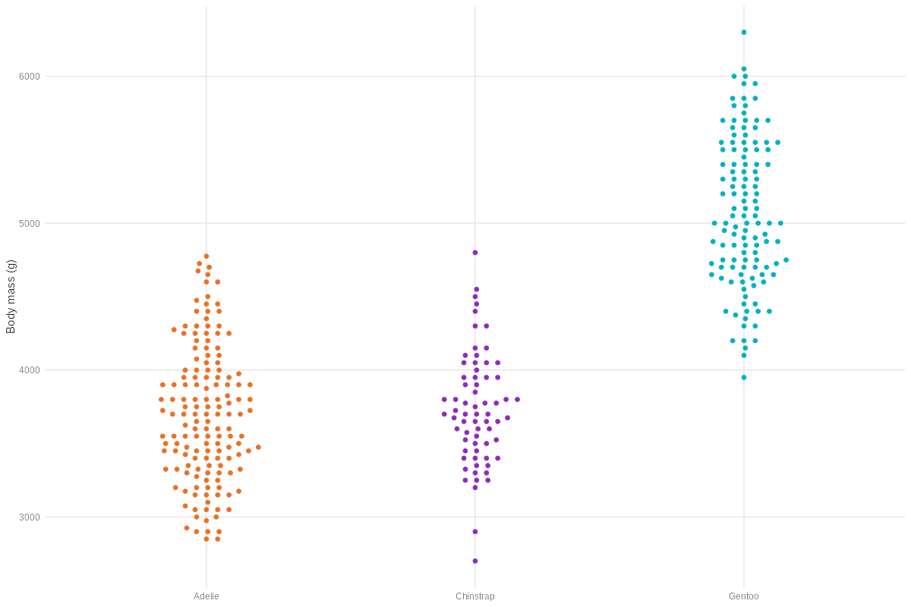
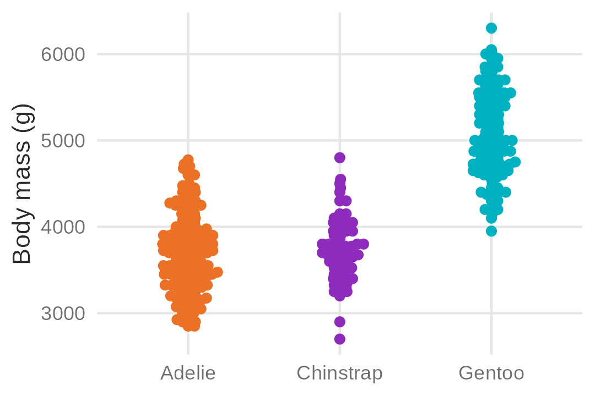
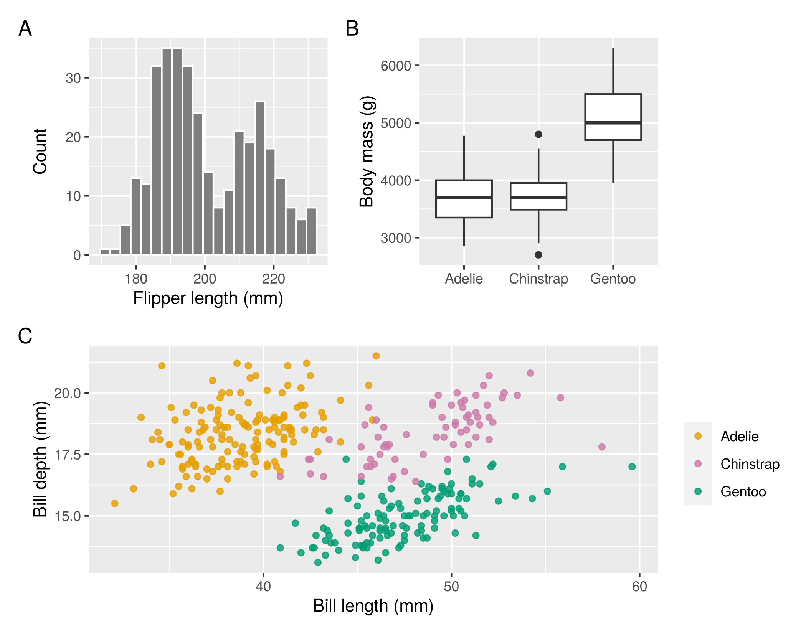
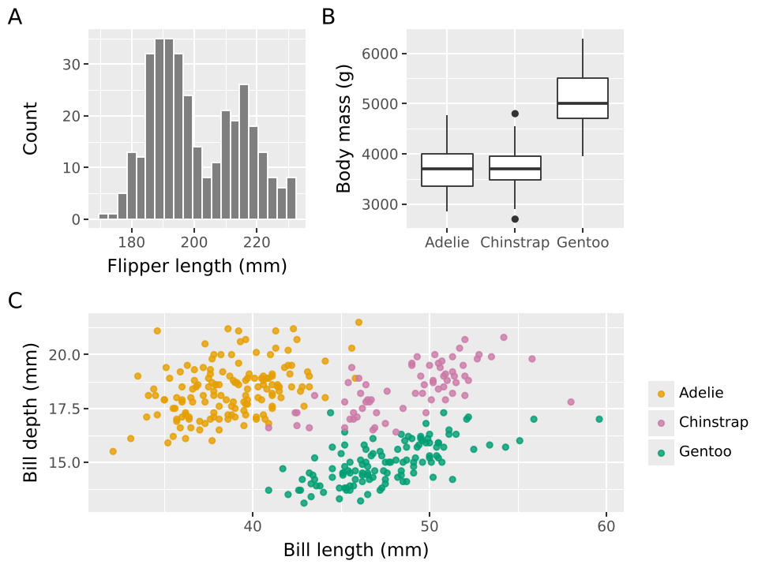
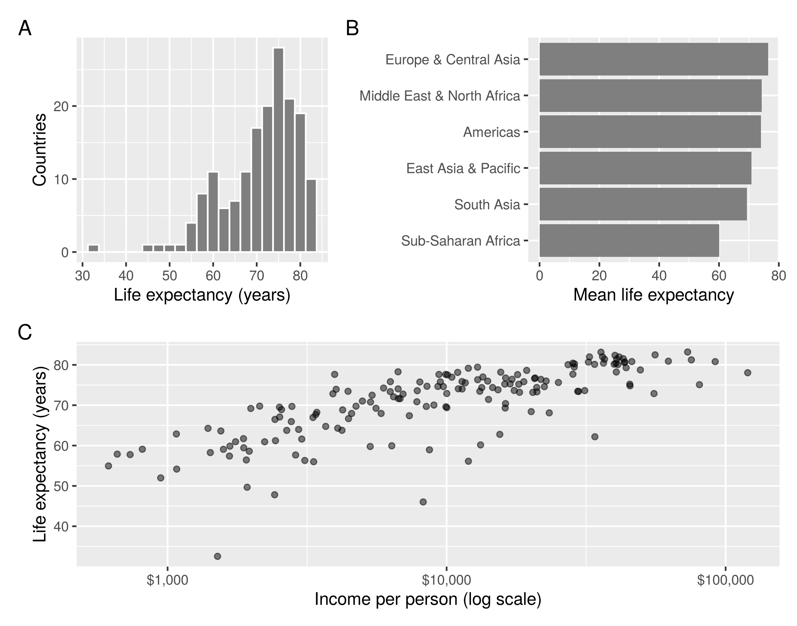
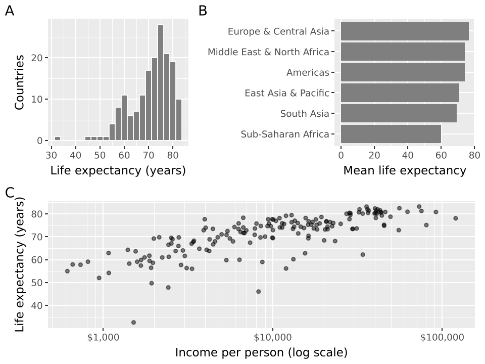

library(tidyverse)
library(patchwork)
penguins <- read_csv("data/penguins.csv")
species_cols <- c(Adelie = "#E69F00", Chinstrap = "#CC79A7", Gentoo = "#009E73")9 Multi-panel figures and export
TipLearning objectives
- Combine several plots into one figure with panel labels.
- Choose between small multiples and combined plots.
- Save figures at their final size, in a suitable format.
- Keep every figure reproducible from a script.
Made big, then shrunk

Saved at screen size, then squeezed into a journal column.Made at final size

Saved at the width it will be printed. Text stays readable.9.1 Load packages and data
import pandas as pd
from plotnine import *
penguins = pd.read_csv("data/penguins.csv")
species_cols = {"Adelie": "#E69F00", "Chinstrap": "#CC79A7", "Gentoo": "#009E73"}9.2 Small multiples or combined plots? Core
There are two kinds of multi-panel figure:
- Small multiples: the same plot repeated for different subsets of the data, with shared axes. Use
facet_wrap()orfacet_grid(). You have met these in earlier chapters. - Combined plots: different plots that together tell one story, such as a distribution, a comparison and a relationship. Use patchwork in R, or the composition operators in plotnine.
9.3 Combining plots Core
Make each plot separately and store it in an object. Then combine them: | puts plots side by side and / stacks them.
p_hist <- ggplot(penguins, aes(x = flipper_length_mm)) +
geom_histogram(binwidth = 3, fill = "grey50", colour = "white") +
labs(x = "Flipper length (mm)", y = "Count")
p_box <- ggplot(penguins, aes(x = species, y = body_mass_g)) +
geom_boxplot() +
labs(x = NULL, y = "Body mass (g)")
p_scatter <- ggplot(penguins, aes(x = bill_length_mm, y = bill_depth_mm, colour = species)) +
geom_point(alpha = 0.8) +
scale_colour_manual(values = species_cols) +
labs(x = "Bill length (mm)", y = "Bill depth (mm)", colour = NULL)
(p_hist | p_box) / p_scatter +
plot_annotation(tag_levels = "A")
plot_annotation(tag_levels = "A") adds the panel letters automatically.
p_hist = (ggplot(penguins, aes(x="flipper_length_mm"))
+ geom_histogram(binwidth=3, fill="#7F7F7F", color="white")
+ labs(x="Flipper length (mm)", y="Count", tag="A"))
p_box = (ggplot(penguins, aes(x="species", y="body_mass_g"))
+ geom_boxplot()
+ labs(x="", y="Body mass (g)", tag="B"))
p_scatter = (ggplot(penguins, aes(x="bill_length_mm", y="bill_depth_mm", color="species"))
+ geom_point(alpha=0.8)
+ scale_color_manual(values=species_cols)
+ labs(x="Bill length (mm)", y="Bill depth (mm)", color="", tag="C"))
p = (p_hist | p_box) / p_scatter
p.show()
In plotnine, panel letters are added to each plot with labs(tag=...).
ImportantDesign principle: one figure, one story
A multi-panel figure should still have a single message, with each panel contributing to it. If the panels tell unrelated stories, they are probably separate figures.
9.4 Saving at the final size Core
The most common reason for unreadable figures in papers is that they were made at one size and printed at another. Text, points and lines are drawn at a fixed physical size, so shrinking the image shrinks them too.
Decide the final width first, then save at exactly that size:
| Where it goes | Typical width |
|---|---|
| Single journal column | 8 to 9 cm |
| Full page width | 17 to 18 cm |
| Slide (16:9) | about 25 cm wide, 13 cm tall |
| A0 poster panel | depends on layout; check at 100% zoom |
p <- ggplot(penguins, aes(x = species, y = body_mass_g)) +
geom_boxplot() +
labs(x = NULL, y = "Body mass (g)") +
theme_minimal(base_size = 9)
ggsave("figures/body_mass.pdf", p, width = 8.5, height = 6, units = "cm")
ggsave("figures/body_mass.png", p, width = 8.5, height = 6, units = "cm", dpi = 600)For a combined patchwork figure, save the combined object in exactly the same way.
p = (ggplot(penguins, aes(x="species", y="body_mass_g"))
+ geom_boxplot()
+ labs(x="", y="Body mass (g)")
+ theme_minimal(base_size=9))
p.save("figures/body_mass.pdf", width=8.5, height=6, units="cm")
p.save("figures/body_mass.png", width=8.5, height=6, units="cm", dpi=600)Combined plots made with | and / have the same save() method.
At a journal column width, a base font size of 8 to 10 points usually matches the text of the paper. For slides, use 16 or more.
9.5 Which file format? Core
| Format | Type | Use for |
|---|---|---|
| PDF or SVG | Vector: shapes and text, sharp at any size | Papers, posters, theses; editing in Illustrator or Inkscape |
| PNG | Raster: pixels | Slides, web pages, documents; use 300 dpi or more for print |
| TIFF | Raster | Only when a journal requires it |
| JPEG | Raster, lossy | Photographs, not plots: it blurs lines and text |
When in doubt, save a PDF for print and a PNG for screens.
9.6 Reproducible figures Core
- Script every figure, including panel letters, labels and annotations. Edits made by hand in other software have to be redone every time the data changes.
- Define colours and themes once, at the top of your script or in a shared file, so every figure in a paper or thesis is consistent.
- Save with explicit sizes, never by copying from the screen.
- Keep the script with the data it uses, ideally in a version-controlled project.
9.7 Exercises
ExerciseA three-panel figure
Level:
Using the Gapminder 2010 data, make a figure with three panels labelled A to C: a histogram of life expectancy, a sorted bar chart of mean life expectancy by region, and a scatter plot of income against life expectancy. Save it at full page width (17 cm) as a PDF.
AnswerAnswer
gapminder <- read_csv("data/gapminder_2010.csv")
a <- ggplot(gapminder, aes(x = life_expectancy)) +
geom_histogram(binwidth = 2.5, fill = "grey50", colour = "white") +
labs(x = "Life expectancy (years)", y = "Countries")
b <- gapminder |>
group_by(region) |>
summarise(le = mean(life_expectancy)) |>
ggplot(aes(x = le, y = fct_reorder(region, le))) +
geom_col(fill = "grey50") +
labs(x = "Mean life expectancy", y = NULL)
c <- ggplot(gapminder, aes(x = income_per_person, y = life_expectancy)) +
geom_point(alpha = 0.5) +
scale_x_log10(labels = scales::label_dollar(accuracy = 1)) +
labs(x = "Income per person (log scale)", y = "Life expectancy (years)")
fig <- (a | b) / c + plot_annotation(tag_levels = "A")
fig
ggsave("figures/gapminder_overview.pdf", fig, width = 17, height = 13, units = "cm")gapminder = pd.read_csv("data/gapminder_2010.csv")
a = (ggplot(gapminder, aes(x="life_expectancy"))
+ geom_histogram(binwidth=2.5, fill="#7F7F7F", color="white")
+ labs(x="Life expectancy (years)", y="Countries", tag="A"))
region_le = gapminder.groupby("region", as_index=False)["life_expectancy"].mean()
order = region_le.sort_values("life_expectancy")["region"]
region_le["region"] = pd.Categorical(region_le["region"], categories=order)
b = (ggplot(region_le, aes(x="region", y="life_expectancy"))
+ geom_col(fill="#7F7F7F")
+ coord_flip()
+ labs(x="", y="Mean life expectancy", tag="B"))
c = (ggplot(gapminder, aes(x="income_per_person", y="life_expectancy"))
+ geom_point(alpha=0.5)
+ scale_x_log10(labels=lambda breaks: [f"${b:,.0f}" for b in breaks])
+ labs(x="Income per person (log scale)", y="Life expectancy (years)", tag="C"))
p = (a | b) / c
p.show()
p.save("figures/gapminder_overview.pdf", width=17, height=13, units="cm")
ExerciseCheck at final size Extension
Level:
Open the PDF you saved and view it at 100% zoom, or print it. Is every label readable? If not, increase base_size in your theme, rather than making the figure bigger.
AnswerAnswer
Viewing at 100% is the only reliable check. If the text is too small, increase the base font size of the theme (for example theme_minimal(base_size = 10)) and save again at the same width.
9.8 Summary
TipKey points
- Use facets for small multiples, and patchwork or plotnine composition for combined plots.
- Add panel letters in code, not by hand.
- Decide the final size first, and save at exactly that size.
- Use vector formats (PDF, SVG) for print and PNG for screens.
- Script everything, so figures can be remade when the data changes.